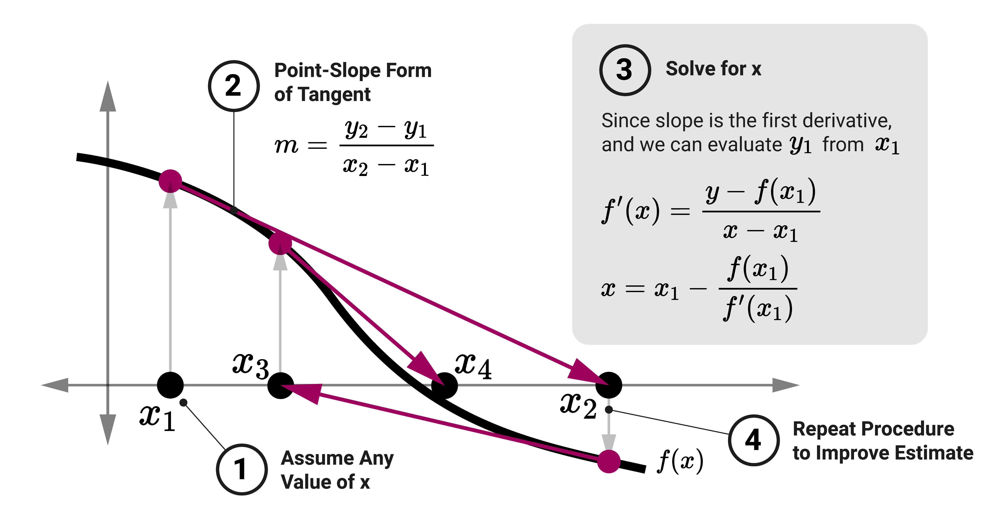

Khiem Nguyen
Lecturer in Multiscale Materials
khiem.nguyen@glasgow.ac.uk
print(), max(), len(), etc.⭕ Always write text description for function unless it is very short and self-explanatory.
⭕ Use question mark to request function’s doc string – This slide does not show the output.
⭕ Illustration by live coding at this point.
After the function is defined, we can call them by:
Hello there!<function __main__.greet()>Note
Use the parenthesis when calling a function, not just the name of the function.
In function definition many input arguments can be declared – recall the syntax!
def print_max(a, b):
"""Print the maximum value between a and b."""
if a > b:
print(a)
else:
print(b)
# After function definition, we can call it.
# he function exists but has not been executed to this point.
max(3, 4) # accept literals, print out 4
fred, anne = 7, 6 # multiple assignments
max(fred, anne) # accept variables too, print out 77a and b is not important as they carry the same meaning.solver_linear_equation()Solve equation 2 x + 1 = 0: -0.5
Solve equation x + 2 = 0: -2.0
Solve equation x = 0: 0.0
Equation does not have solution.
Solve equation 0 x + 1 = 0: Nonekwarg=value
function(a=a, b=b, c=c, ...)
v1, v2 = 2, 1
print("Solve equation 2 x + 1 = 0:", solve_linear_equation(a=v1, b=v2))
a, b = 2, 1
# In the writing "a=a" and "b=b", the keyword arguments
# "a=" and "b=" mean that a and b expect to receive values
# while the actual values are given on the right-hand sides
# of a and b.
print("Solve equation 2 x + 1 = 0:", solve_linear_equation(b=b, a=a))Solve equation 2 x + 1 = 0: -0.5
Solve equation 2 x + 1 = 0: -0.5So let us examine a Newton-Raphson method to solve algebraic equation \(f(x) = 0\)
Newton-Raphson iterations
# variable "retries" and "reminder" are defaulted to 4
# and 'Come on!...'
def ask_ok(prompt, retries=4, reminder='Only "yes" or "no"'):
""" Ask until receiving 'yes' or 'no' """
while True:
ok = input(prompt)
if ok in ('y', 'ye', 'yes'):
return True
if ok in ('n', 'no', 'nah'):
return False
retries = retries - 1
if retries < 0:
print(reminder)
return False # or return Nonedef ask_ok(prompt, retries=4, reminder='Only "yes" or "no"'):
""" Ask until receiving 'yes' or 'no' """
while True:
ok = input(prompt)
if ok in ('y', 'ye', 'yes'):
return True
if ok in ('n', 'no', 'nah'):
return False
retries = retries - 1
if retries < 0:
print(reminder)
return False # or return NoneExplanation
x has been made in the function so that the value of x does not change after calling tweak().print(x) prints 10 because x is equal to \(10\).return statement in the function tweak(), so the function return None. Therefore tweak_output takes value None.my_list = ["element 1", "element 2", "element 3"]
list_alias = my_list
print("id(my_list) =", id(my_list))
print("id(list_alias) =", id(list_alias))
print("my_list =", my_list)
print("list_alias =", list_alias)
# Let us change the first element of list_alias
list_alias[0] = "something"
print("After changing list_alias:")
print("my_list =", my_list)
print("list_alias =", list_alias)my_list = ["element 1", "element 2", "element 3"]
list_alias = my_list
# --> list_alias and my_list point to the same list
print("id(my_list) =", id(my_list))
print("id(list_alias) =", id(list_alias))
print("my_list =", my_list)
print("list_alias =", list_alias)
# Let us change the first element of list_alias
list_alias[0] = "something"
print("After changing list_alias:")
print("my_list =", my_list)
print("list_alias =", list_alias)id(my_list) = 124703863380608
id(list_alias) = 124703863380608
my_list = ['element 1', 'element 2', 'element 3']
list_alias = ['element 1', 'element 2', 'element 3']
After changing list_alias:
my_list = ['something', 'element 2', 'element 3']
list_alias = ['something', 'element 2', 'element 3']def greeting(names):
"""Say hello to everyone."""
print("id(input-argument) =", id(names)) # print ID of the input argument
for name in names:
print("Hello " + name + "!", end = "\t")
names[0] = "Somebody else" # Change the first element of the input-argument (as a list)
names[-1] = "Stranger" # Change the last element of the input-argument (as a list)people = ["Fred", "Anna", "Bob"] # create a list
print("people (before function call) =", people)
print("id(people) =", id(people))
print(15*"=" + " Function call " + 15*"=")
greeting(people)
print("\n" + 45*"=")
# see the changes after the function call
print("people (after function call) =", people) people (before function call) = ['Fred', 'Anna', 'Bob']
id(people) = 124705310322880
=============== Function call ===============
id(input-argument) = 124705310322880
Hello Fred! Hello Anna! Hello Bob!
=============================================
people (after function call) = ['Somebody else', 'Anna', 'Stranger']return statement.None.min value = -4
max value = 5min and max as variable names; they are functions provided by Python."""documentation strings"""help() to fetches them.# Instead of help(function_name), we can also use function_name?Repeat example
add? does not work on this slide but help(add) does.add?, let us turn to Jupyter Notebook (live code illustration).Syntax
argsargs will always be a tuple, and is placed as the last argument (still before variable number of inputs as keyword arguments).args.* in front of args is to signify that the tuple is unpacked and passed in as separate arguments. These seprate arguments are then accessed by indexing.Example
Use of this function
Problem statement
concat that joins all the input parameters by a seprator which is defaulted to "--".concat("earth", "mars", "venus")earth--mars--venus.concat("Mech", "Engineering", "Skills", "3", sep=" ")"Mech Engineering Skills 3"join for a string.This -- is -- a -- short -- sentenceconcat as described above?Define a function concat receiving arbitrary number of inputs so that
concat("earth", "mars", "venus")earth--mars--venus.concat("Mech", "Engineering", "Skills", "3", sep=" ")"Mech Engineering Skills 3"Syntax
Best by example
{'one': 1, 'two': 2, 'three': 3, 'four': 4}Explanation
one=1, two=2, three=3 and four=4 into a dictionary.kwargs dictionary in the function body as a regular dictionary.kwargs – short for keyword arguments – is widely used and has become a standard.